Parts and Materials Required
- Allen wrench, 2.5 mm
- Allen wrench, 3 mm
- Allen wrench, 4 mm
- LUMO, PMT MODULE WITH PCB
Time Required
-
4 hours (includes re-teaching the Distributor module and performing a Panther Luminometer SysCheck Reagent Verification procedure)
Removal Procedure
- Put on proper PPE.
- Remove the Luminometer from the system.
 Once the Luminometer has been removed, disconnect the Luminometer PMT Photomultiplier tube cable from the Luminometer PMT board.
Once the Luminometer has been removed, disconnect the Luminometer PMT Photomultiplier tube cable from the Luminometer PMT board.
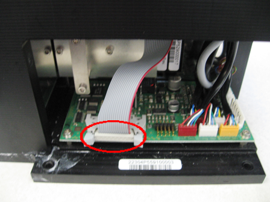
- Using a 3 mm Allen wrench, remove the ten 3 mm screws that secure the Luminometer lid.
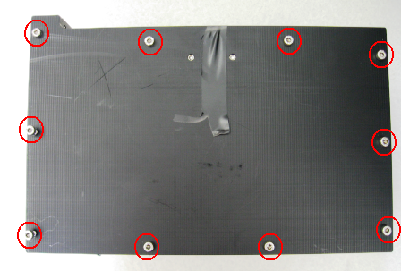
- Carefully place the Luminometer lid on the side of the Luminometer.
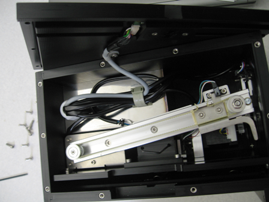
- Loosen the two 2.5 mm set screws that secure the PMT.
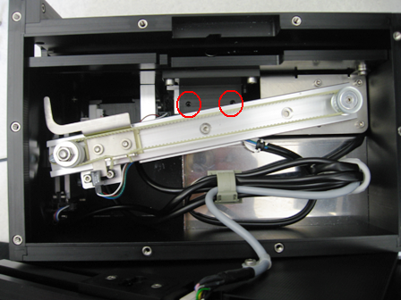
- Pull the PMT from the Luminometer.
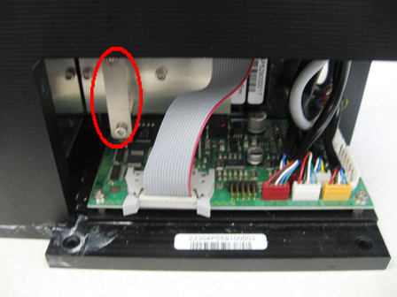
Replacement Procedure
- Push the PMT into the Luminometer and ensure it has been securely inserted.
- Tighten the set screws in the internal block.
- Reinstall the Luminometer lid.
- Using a 3 mm Allen wrench, install the ten 3 mm screws that secure the Luminometer lid.
- Plug the PMT cable back into the Luminometer PCB.
- Re-install the Luminometer.
- Start Service Software.
- Navigate to the 6. Luminometer tab.
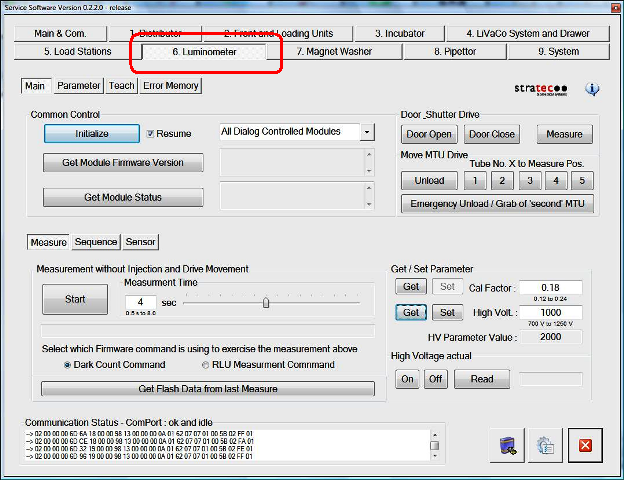
- Select the Parameter tab.
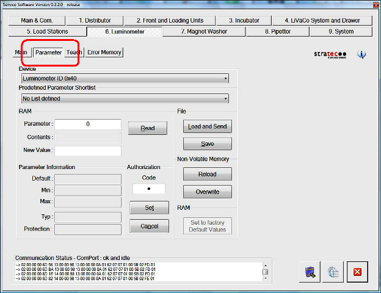
- In the Authorization/Code field, enter "1".
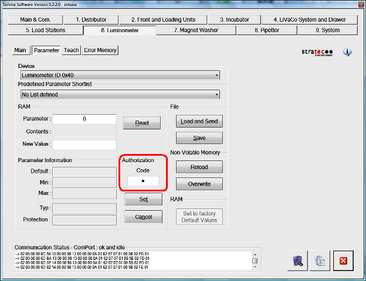
- Select Set.
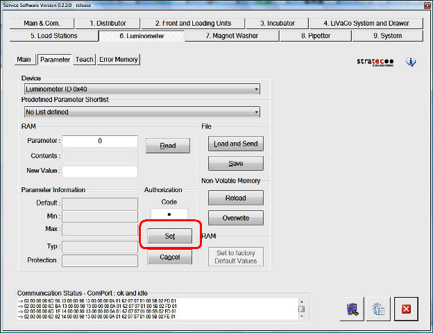
- Navigate to the Main tab.
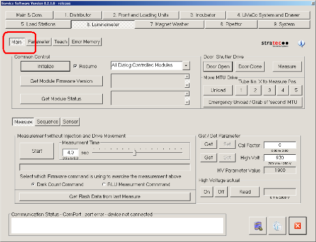
- In the Get/Set Parameter section, enter the high voltage value in the High Volt field. Select Get.
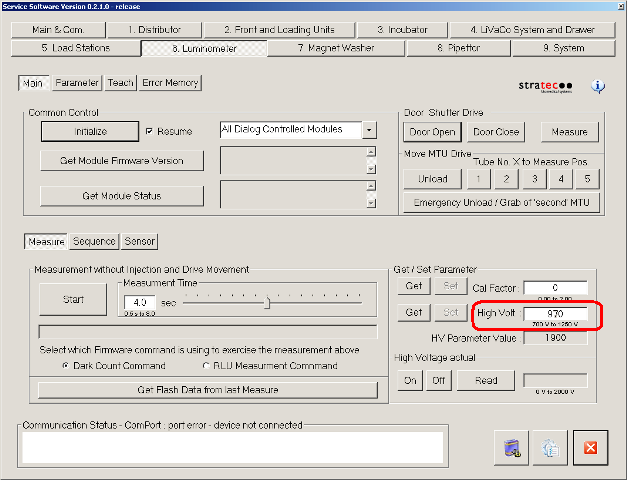
 Note—The high voltage value can be found as part of the documentation for the new PMT (Operation Voltage).
Note—The high voltage value can be found as part of the documentation for the new PMT (Operation Voltage).
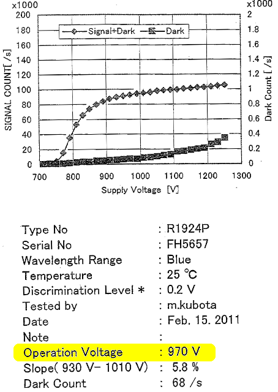
- Select Set.
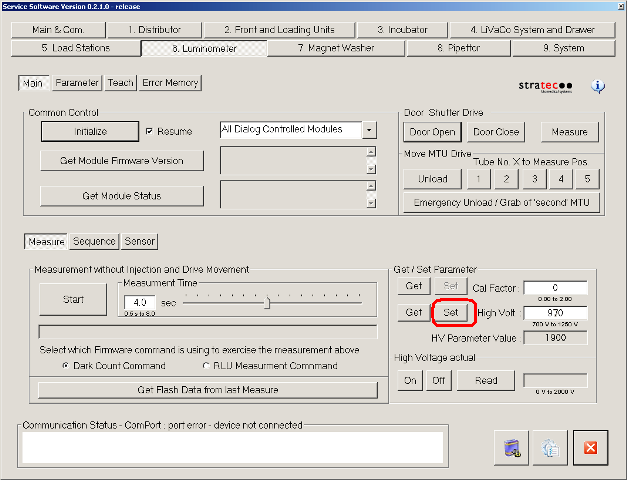
- Close Service Software.
Alignment/Calibration
- Perform a Luminometer Darkcount Procedure.
- Align the Distributor to the Luminometer.
- Perform a Luminometer OLV Dispense Verification.
Verification
- Verify that the Luminometer is properly assembled.
- Using Service Software, run a system Operational Qualification Procedure.
- Perform the Syscheck procedure.
- Perform the Flashcheck procedure.
 button at the top of the page to send feedback, comments, or change requests.
button at the top of the page to send feedback, comments, or change requests.{kind=link}